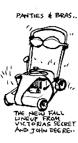

|
I've heard a lot of women complain that men treat them like objects. And after careful consideration I think I've developed some interesting corollaries to that theory...
A coworker of mine over the summer came in sweating one day and said, "It's so hot out there I've got to take her off." He used the "her" in this statement to signify his jacket. He then proceeded on, saying, "The lawn needs a some cutting, I better start her up." And this "her", obviously (or not), referred to the lawn mower. And even if we were to ignore my coworker who seems to interpret everything as female, perhaps attributed to some deviant nature that I am not yet fully aware of, I'm sure everyone has heard the sentiment echoed on more than one occasion, "Isn't she a beauty?" usually making reference to a car§, boat, or generally some other kind of hardware or power tool.
So maybe it would be safe to say that not only do men treat women like inanimate objects, but men treat inanimate objects like women. Just look at the market for blow-up women (complete with hairdryer and vacuum attachments) and the popularity of the four-foot Barbie doll.
Maybe men aren't completely to blame. The Sapir-Worf hypothesis says that language shapes the way people see the world, and at the same time, the world shapes the way we use language. Just look at the German language. All nouns in German are assigned a specific gender: the masculine "der", feminine "die", and the neuter "das". Curiously enough, German for "the girl" is "das Mädchen." And this makes the German girls neuter. Now whether they are or not is questionable, but it would explain the large recent influx of Turkish people into Germany.
Does this mean that women and inanimate objects are interchangeable as concepts? It does have a historical precedence. Just think of Eve; she was made from Adam's rib. If Eve is truly the mother of all women, it means that the only animate female is Lilith...and Lilith was banned. Also, don't forget Lot's wife. Remember her? Turned around and turned into a pillar of salt? She probably slept it off and went on to found "Gentiles Inc." More recent examples include whoever the "reigning" English Monarch is and Nicole Kidman acting in that stink-burger "Batman Forever."
Perhaps men are just following The Golden Rule: Do Unto Others as You Would Have Them Do Onto You. Maybe men treat women the way they want to be treated. Men want to be the inanimate objects in their woman's life. It would be perfect; none of this talk about feelings or relationships; just dust 'em and change their underwear once in a while.
Is it true? Try it yourself! We encourage all women to take the Armor-All(TM) challenge to the nearest male. Just watch him quiver in ecstasy!
§ Cars are interesting objects:
- A car is always a "she."
- If it goes really fast, however, it "has balls."
- And if it is in really good condition, it said to be "cherry."
Some mixed metaphor there...
|

|